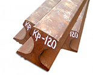

//= html/_head.html
Template
//= html/_header.html
Главная
/
Поиск
Результаты поиска
Вы искали "рельсы"
Рельсы Р-65, L=25 м

Рельсы Р-65, L=25 м
55 000 Р / тн
Рельсы Р-65 Т1, L=12.5 м
Рельсы крановые КР-70
Рельсы Р-65, L=12.5 м, 1-я гр. годности
Рельсы крановые КР-80 – КР-120
Рельсы Р-50, L=12.5 м, 1-я гр. годности
Рельсы трамвайные Т-62
Рельсы Р-43 – Р-18 1-я гр. годности
Рельсы Р-50, L=12.5 м
//= html/_footer.html //= html/_footer-mobile.html //= html/_menu.html
//= html/_scripts.html